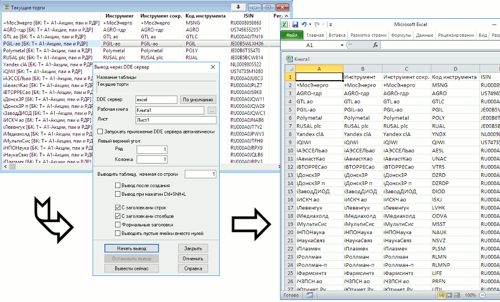

Кнопка
Передача данных из таблиц системы QUIK во внешние программы, например, в Microsoft Excel. Экспорт осуществляется в формате XLTABLE через метод обмена данными DDE. 
Назначение
Использование
Поле
Значение
Название таблицы
Название таблицы QUIK, являющейся источником
данных
DDE-сервер
Наименование DDE-сервера. Нажатием кнопки «По умолчанию»
возвращается значение «excel»
Рабочая книга
Наименование файла, в
который будет выведена информация из таблицы. Кнопка «…» справа
позволяет указать существующий файл, расположенный на диске, и путь до
него. Если выбран DDE-сервер «excel», то файл рабочей книги должен иметь расширение
.xls или .xlsx.
Лист
Наименование листа, на который будет перенесена
информация из таблицы
Запускать приложение DDE сервера
автоматически
Активизировать функцию
автоматического открытия выбранной рабочей книги в MS Excel при старте
экспорта. Флажок активен, если в качестве DDE сервера выбран
«excel».Поля «Рабочая книга» и «Лист» могут
быть не заполнены.
Левый верхний угол
Координаты начальной ячейки для передачи данных
Выводить таблицу, начиная со строки
Выводить строки таблицы, начиная с заданного
номера. Может применяться для сокращения времени повторного вывода
таблиц, например Таблицы обезличенных сделок
Вывод после создания
Активизировать функцию экспорта данных сразу после
загрузки файла с конфигурацией таблиц, например, при открытии программы
QUIK
Вывод при нажатии Ctrl+Shift+L
При установленном флажке экспорт из таблицы может быть
активизирован нажатием приведенной комбинации клавиш
С заголовками строк
Выводить в качестве первой колонки заголовки строк
таблицы QUIK
С заголовками столбцов
Выводить в качестве первой строки заголовки столбцов
таблицы QUIK
Формальные заголовки
Выводить в качестве заголовков их системные (служебные)
наименования. Может использоваться для удобства программирования.
Выводить пустые ячейки вместо нулей
Оставлять пустыми (не заполнять числовыми значениями)
ячейки, содержащие нулевые значения. Данное свойство полезно при
графическом отображении рядов данных средствами MS Excel, для
предотвращения «провалов» линий графика в местах, где данные
отсутствуют (не были получены с сервера).
В MS Excel имена созданных, но еще не сохранённых книг задаются без расширения, например, «Книга1». Если в качестве рабочей книги указано имя без расширения, то сначала будет выполнена попытка найти такую книгу среди уже открытых в MS Excel, а если она не найдена, то создать новую книгу. При этом совпадение имени с указанным в поле «Рабочая книга» не гарантируется.
Если имя книги не указано, то при запуске MS Excel в нем будет создана новая книга. Если не указано имя листа, то в книге сначала ищется лист с названием экспортируемой таблицы (например, «Таблица заявок #2»), а если он не найден, то добавляется новый лист с таким названием. При запуске экспорта в MS Excel из других таблиц без указания имени рабочей книги, будет использоваться эта же рабочая книга.
Если в поле «Рабочая книга» указано имя файла без полного пути до него, то происходит поиск файла в текущем рабочем каталоге. При неудачной попытке системой выдается сообщение об ошибке.